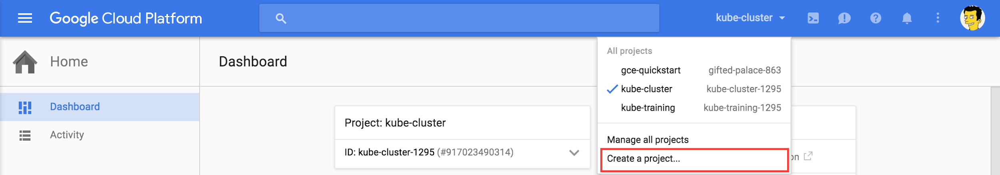
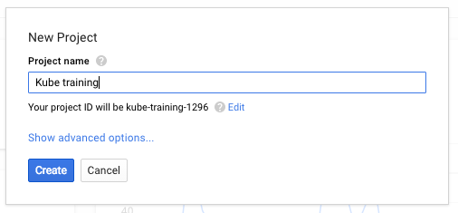
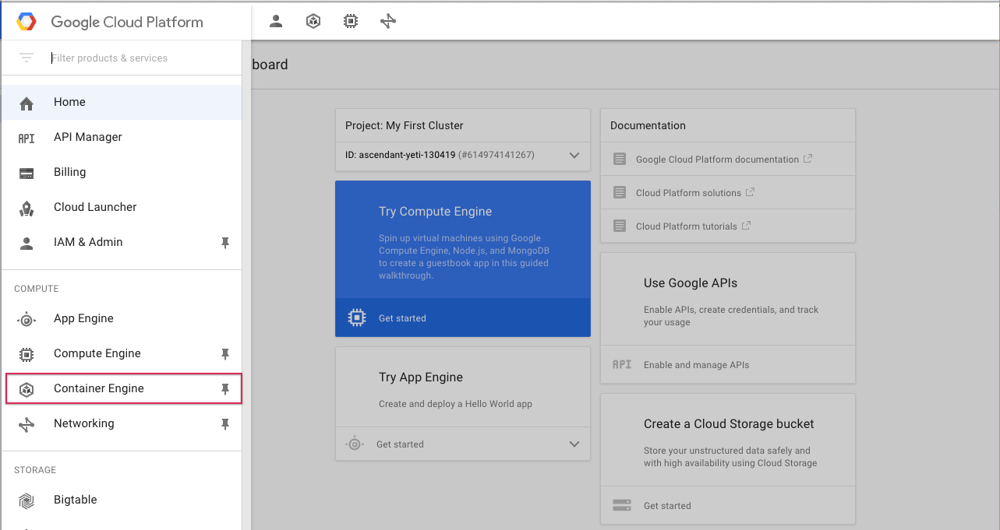
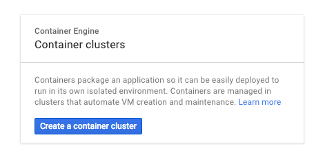
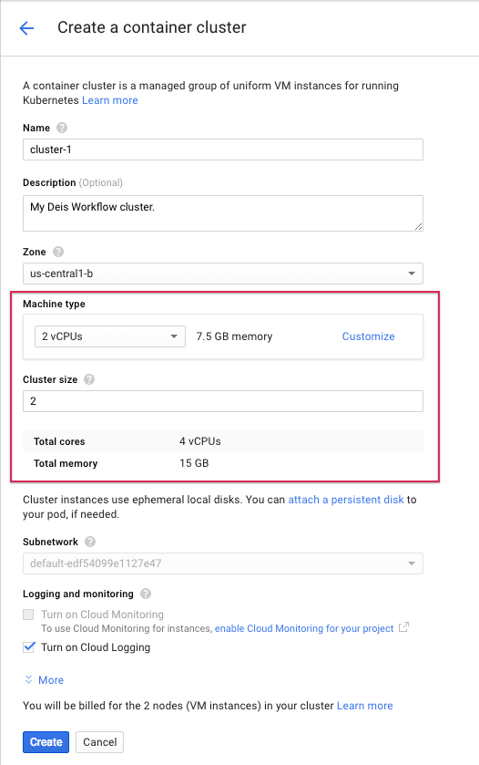
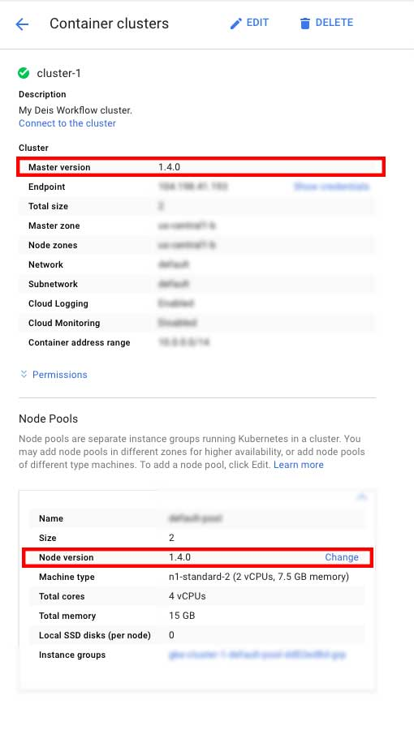

Booting Kubernetes on Google Container Engine¶
Google Container Engine (GKE) is a managed Kubernetes environment which is great for hosting Deis Workflow. Google Container Engine manages the Kubernetes master and you pay for the compute nodes. Clusters smaller than five nodes are charged only for the compute. Clusters six nodes are larger cost $0.15/hour per cluster.
If you do not already have a Google Cloud account, you can start a trial with $300 of free credit here. After completing sign up, you must add your billing information.
Create Your Google Cloud Project¶
Sign in to your Google Cloud Platform Console and create a new project:

Pick a project name. A project groups resources together and can hold more than one container cluster:

Note the project ID. This is a unique name across all Google Cloud projects. Later, we will refer to this as PROJECT_ID.
Next, enable billing in the console. Next, enable the Container Engine API and Compute Engine API. You must complete all three steps before continuing.
Create Your GKE Cluster¶
From the navigation hamburger in the upper left corner, find and select Container Engine:

Select Create Container Cluster:

For development and testing, we recommend you use the n1-standard-2 machine type which has 2 VCPUs and 7.5 GB of RAM per server, and a cluster size of at least 2:

Click "Create" and Google Container Engine will provision your cluster. The process will take a few minutes to complete.
Check Kubernetes version¶
]
After the cluster is created, check the node version. See Kubernetes Versions under System Requirements for more details.
Install and configure the Google Cloud CLI¶
While your container cluster is booting. You will need to install the Google Cloud CLI tools. We will use the tools to fetch cluster credentials to authenitcate to your new Kubernetes cluster.
Google maintains a number of quickstart guides which walk you through the installation.
Once you have installed the CLI tooling set your default project and list your container clusters:
$ gcloud projects list
PROJECT_ID NAME PROJECT_NUMBER
ascendant-yeti-130419 My First Cluster 614974141267Set your default project:
$ gcloud config set project ascendant-yeti-130419Then list your container clusters:
$ gcloud container clusters list
NAME ZONE MASTER_VERSION MASTER_IP MACHINE_TYPE NODE_VERSION NUM_NODES STATUS
cluster-1 us-central1-b 1.4.0 104.154.234.246 n1-standard-2 1.4.0 * 2 RUNNINGIf you haven't configured your default zone, make sure it matches the ZONE for your cluster:
$ gcloud config set compute/zone us-central1-bNow you may fetch credentials to connect to Kubernetes:
$ gcloud auth application-default login
Your browser has been opened to visit:
https://accounts.google.com/o/oauth2/auth?redirect_uri=....
Credentials saved to file: [~/.config/gcloud/application_default_credentials.json]
These credentials will be used by any library that requests
Application Default Credentials.If you don't have kubectl CLI setup just yet, run this to get it available
locally:
$ gcloud components install kubectlYour local kubectl utility should now be pointed at your new container cluster. You can verify your credentials and local configuration by running:
$ kubectl cluster-info
Kubernetes master is running at https://104.154.234.246
GLBCDefaultBackend is running at https://104.154.234.246/api/v1/proxy/namespaces/kube-system/services/default-http-backend
Heapster is running at https://104.154.234.246/api/v1/proxy/namespaces/kube-system/services/heapster
KubeDNS is running at https://104.154.234.246/api/v1/proxy/namespaces/kube-system/services/kube-dns
kubernetes-dashboard is running at https://104.154.234.246/api/v1/proxy/namespaces/kube-system/services/kubernetes-dashboardIf kubectl cluster-info returned with the following error:
The connection to the server localhost:8080 was refused - did you specify the right host or port?You'll need to run:
$ gcloud container clusters get-credentialsTo download the credentials necessary. The kubectl cluster-info command should then work as intended.
You are now ready to install Deis Workflow